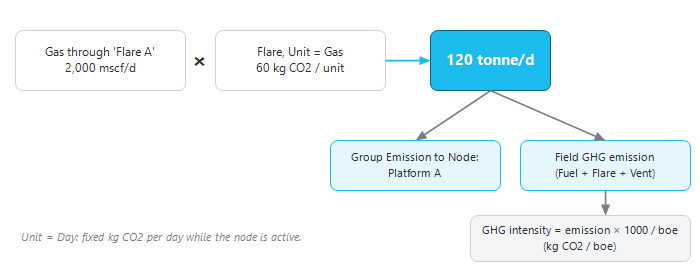

|
GHG emission
1. Overview
Precept can forecast the greenhouse-gas (GHG) emissions of the asset, expressed as CO2, together with the production. Emissions are calculated from emission factors that you enter per facility node: for each node, how many kg of CO2 are emitted per unit of a rate flowing through the node (for example per mscf of gas burnt as fuel or flared), or per day of operation.
At each time step Precept multiplies the forecast rate at the node by its factor, and reports:
•the emission of each node, split into "GHG from Fuel", "GHG from Flare" and "GHG from Vent", in tonne/d;
•the total "GHG emission" of each node and of the field;
•the "GHG intensity": kg of CO2 per barrel of oil equivalent (boe) produced;
•the cumulative emission, in tonnes.

How Precept turns the forecast rates of a node into CO2 emissions and intensity.
2. Switch the calculation on
1.Click "Settings" in the "Forecast" group of the main ribbon.
2.In the "Speed" box, tick "GHG emission".
3.Click "Save Settings".
The calculation adds work to every time step, so leave it off when you do not need it.
3. Enter the emission factors
1.Select the scenario on the main window.
2.Click "GHG emission" in the "Expertise" group of the main ribbon. The "GHG" window opens.
3.Click "Add" to add a row, fill it, then click "Save". "Delete selected rows", "Delete All rows" and "Help" work as in the other input tables.
|
Column
|
Meaning
|
|
"Type GHG"
|
"Fuel" (gas burnt for power or heat), "Flare" (gas flared) or "Vent" (gas vented).
|
|
"Node"
|
The facility node (any node of the network except wells), for example a power-generation node or a flare node.
|
|
"Unit"
|
What the factor is applied to: a rate at the node ("Oil", "Water", "Gas", "Gas-lift", "Total Gas", "Liquid", "Water Injection", "Gas Injection"), or "Day".
|
|
"kg C02 emitted per unit"
|
The emission factor: kg of CO2 per unit of that rate (per bbl or m³ of liquid, per mscf or m³ of gas, in the asset's units), or per day.
|
|
"Group Emission to Node"
|
Optional: the emission of this node is also added to this group, to report the emissions per location (for example per platform).
|
|
"Comment"
|
Free text.
|
With "Unit" = "Day", the factor is emitted every day the node is active (liquid, gas, water injection or gas injection flowing through it) and is 0 when the node is shut.
Example: a flare node "Flare A" receives the gas that is flared. Row: "Type GHG" = Flare, "Node" = Flare A, "Unit" = Gas, "kg C02 emitted per unit" = the flaring emission factor per mscf (or per m³), "Group Emission to Node" = Platform A.
Tips:
•Enter one row per node. If a node has several emission sources (fuel and flare), model them on separate nodes, so the node results show both.
•The rate used is the rate of the node in the forecast, so the network must route the fuel and flare gas to these nodes (see Network modelling).
•"Vent" can be selected but is not calculated in the current version: "GHG from Vent" stays at 0.
4. Results
GHG results are available for a deterministic forecast. After the forecast, click "Charts" in the "Forecast Results" group of the main ribbon (see Forecast results: Charts), select the field, a node or a group, then a parameter:
|
Parameter
|
Meaning
|
Unit
|
|
"GHG emission"
|
Total emission (fuel + flare + vent).
|
tonne/d
|
|
"GHG from Fuel", "GHG from Flare", "GHG from Vent"
|
Emission per type.
|
tonne/d
|
|
"GHG intensity"
|
Emission per boe produced. For the field it uses the field boe production; for a node, the oil rate of the node.
|
kg CO2/boe
|
The cumulative view shows the cumulative CO2 emission in tonnes.
|